This function is a wrapper for image.plot designed to streamline the visualisation of pretty matrices. The function returns a plot which can be customised.
pretty_mat(
z,
retain_orientation = FALSE,
zlim = NULL,
col = (grDevices::colorRampPalette(c("white", "yellow", "orange", "red")))(100),
col_diag = NULL,
grid = NULL,
add_axes = TRUE,
xtick_every_n = 1,
ytick_every_n = xtick_every_n,
cex.axis = 1,
las = TRUE,
xlab = "",
ylab = "",
...
)Arguments
- z
A matrix to be plotted.
- retain_orientation
A logical input which defines whether or not the plot should retain the same orientation as the printed matrix. The default is
FALSE, in which case the underlying plotting function (image.plot) rotates the matrix by 90 degrees counter-clockwise in the plot. In contrast,retain_orientation = TRUEforces the matrix and the plot to retain the same orientation (see Details).- zlim
A numeric vector of length two which specifies the z axis limits (see
image.plot),- col
A colour table to use for the image (see
image.plot).- col_diag
(optional) A colour which, if provided, is used to shade the diagonal of the matrix. This is useful for symmetric square matrices.
- grid
(optional) A named list which, if provided, is passed to
add_grid_rect_xyto draw grid lines around each matrix cell. Argumentsxandydefault to the positions of each matrix cell and do not need to be provided. To useadd_grid_rect_xy's default graphical options, simply specifygrid = list().- add_axes
A logical input which defines whether or not to add axes to the plot. Axes tick marks are given every nth column and every nth row (see below).
- xtick_every_n
A numeric input which defines the spacing between sequential tick marks for the x axis. Tick marks are given every
xtick_every_n(see Details).- ytick_every_n
A numeric input which defines the spacing between sequential tick marks for the other axis. Tick marks are given every
ytick_every_n(see Details).- cex.axis
A number which specifies the axis font size (see
par).- las
The style of axis labels (see
par).- xlab
The x axis label.
- ylab
The y axis label.
- ...
Additional arguments passed to
image.plot. These should not includex,y,xlim,ylimoraxeswhich are controlled internally.
Value
The function returns a plot of a matrix with coloured cells.
Details
The limits of the plot are set between (0.5, number of rows + 0.5) and (0.5, number of cols + 0.5). Axes are added by default, but can be suppressed. If available, matrix row/column names are used to define axis labels. Otherwise, an index is used. Axes labels are added every xtick_every_n and ytick_every_n. If retain_orientation is FALSE, the plot is rotated 90 degrees counter-clockwise relative to the input matrix and thus read from the bottom-left to the top-right (like a map), so that matrix columns and corresponding tick mark labels are represented along the y axis whereas matrix rows and corresponding tick mark labels are represented along the x axis. In contrast, if retain_orientation is TRUE, the plot is read from the top-left to bottom-right.
Examples
#### Define an example square matrix
n <- 25
mat <- matrix(sample(0:100, size = n^2, replace = TRUE), ncol = 25, nrow = 25)
#### Example (1): The default options
pretty_mat(mat)
#### Example (2): Customisation
# Adjust labelling and note how under the default settings the plot
# ... is rotated by 90 degrees counter-clockwise
rownames(mat) <- colnames(mat) <- LETTERS[1:nrow(mat)]
pretty_mat(mat)
pretty_mat(mat, xlab = "ID", ylab = "ID")
 # Adjust the number of labels
pretty_mat(mat, xlab = "ID", ylab = "ID",
xtick_every_n = 5, ytick_every_n = 2)
# Compare to plot with retained orientation
pretty_mat(mat, xlab = "ID", ylab = "ID",
xtick_every_n = 5, ytick_every_n = 2,
retain_orientation = TRUE)
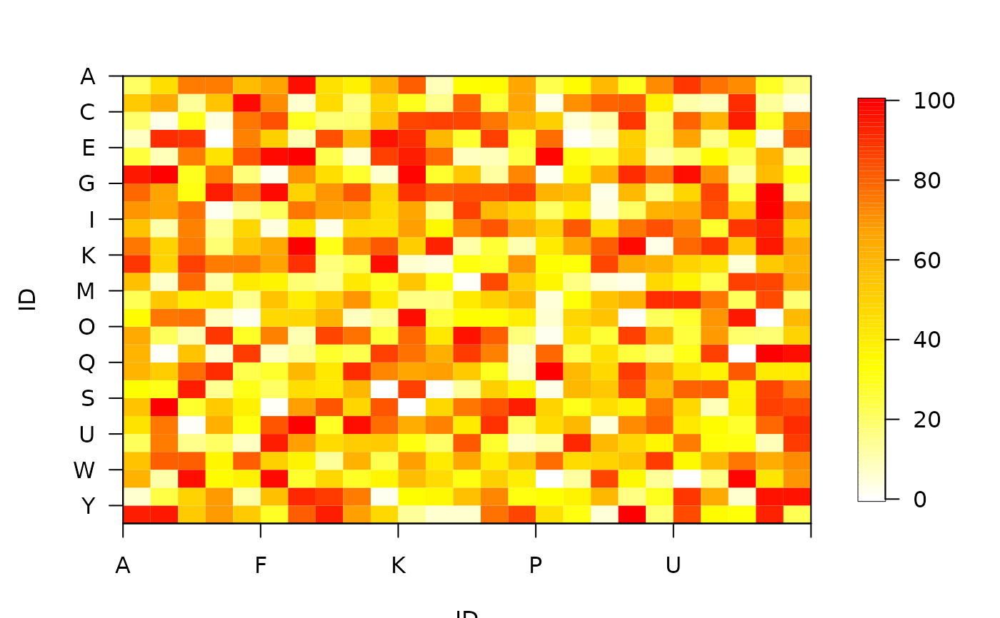
# Adjust z limits
pretty_mat(mat, zlim = c(0, 200))
# Adjust the number of labels
pretty_mat(mat, xlab = "ID", ylab = "ID",
xtick_every_n = 5, ytick_every_n = 2)
# Compare to plot with retained orientation
pretty_mat(mat, xlab = "ID", ylab = "ID",
xtick_every_n = 5, ytick_every_n = 2,
retain_orientation = TRUE)
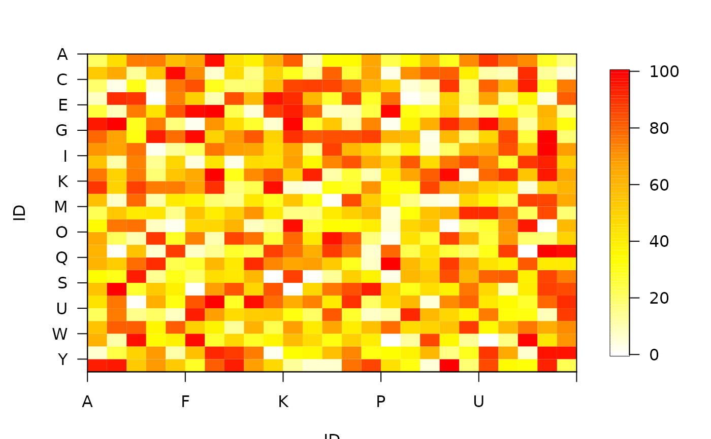
# Adjust z limits
pretty_mat(mat, zlim = c(0, 200))
 # Adjust colour scheme
pretty_mat(mat, col = grey.colors(100))
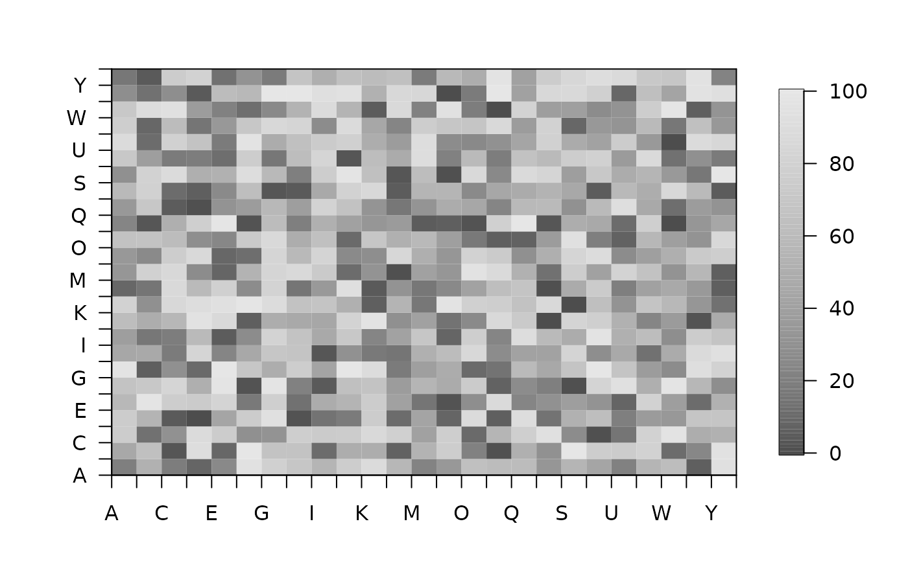
# Colour the diagonal (useful for symmetric square matrices)
pretty_mat(mat, col_diag = "black")
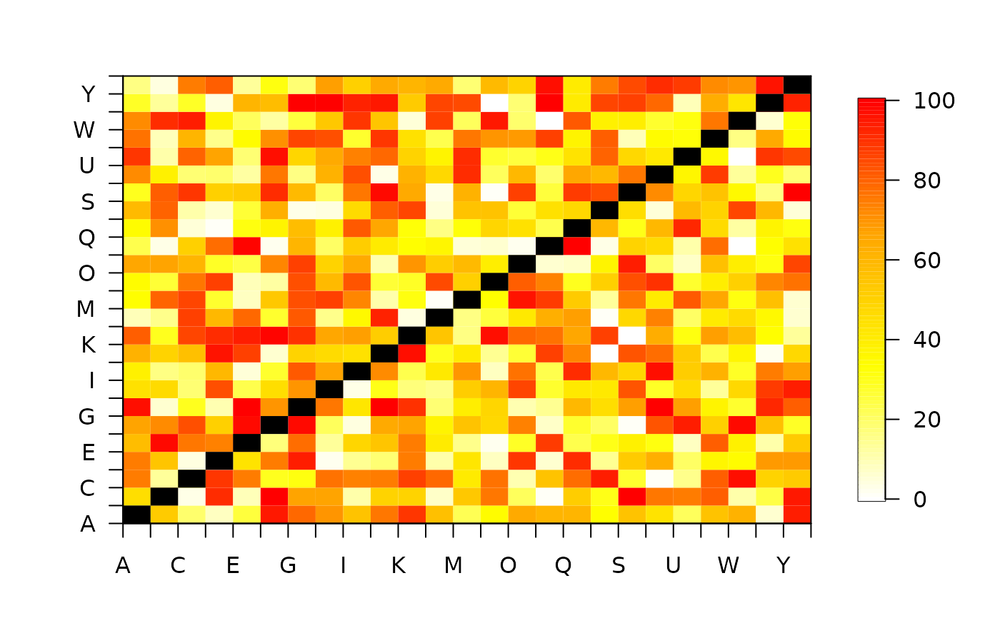
# Add a grid using default options
pretty_mat(mat, grid = list())
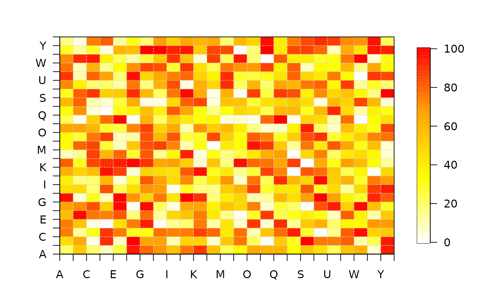
# Customise the grid
pretty_mat(mat, grid = list(col = "black", lty = 1))
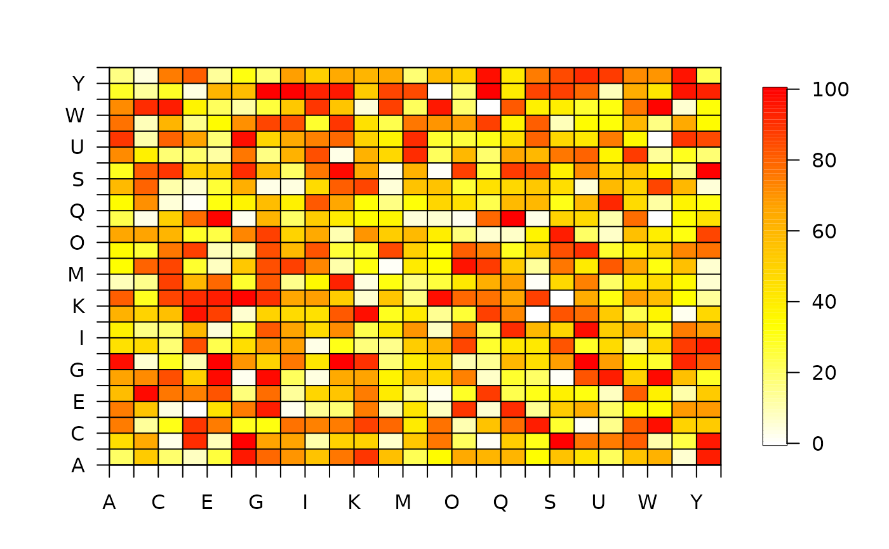
#### Example (3) Rectangular matrices function similarly
# Define matrix
n1 <- 5; n2 <- 10
mat <- matrix(sample(0:100, size = n1*n2, replace = TRUE), ncol = n1, nrow = n2)
utils::str(mat)
#> int [1:10, 1:5] 97 20 78 82 76 96 85 63 61 15 ...
# Visualise matrix with default options
pretty_mat(mat)
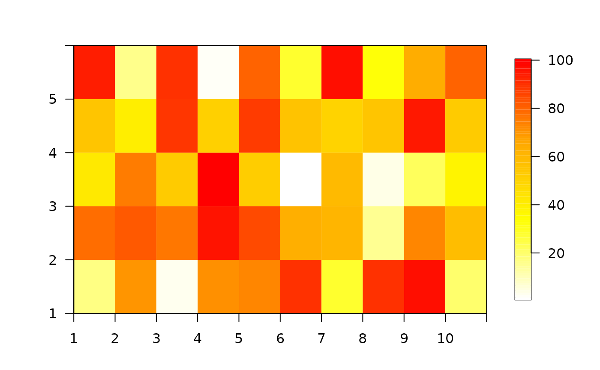
# Adjust names
rownames(mat) <- LETTERS[1:nrow(mat)]
colnames(mat) <- LETTERS[1:ncol(mat)]
pretty_mat(mat)
# Other options can be implemented as above
pretty_mat(mat, grid = list(lty = 1))
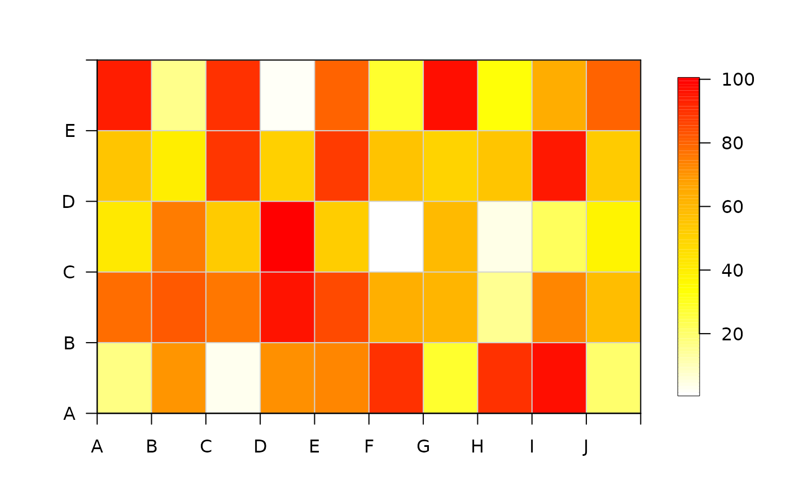
# However, adding colours along the diagonal may not make sense for asymmetric matrices
pretty_mat(mat, col_diag = "grey")
#' #### Example (4): Understanding the retain_orientation argument:
# ... Under the default option (retain_orientation is FALSE), R plots a
# ... 90 degree counter-clockwise rotation of the conventional
# ... printed layout of a matrix. This can be difficult to interpret.
# ... retain_orientation = TRUE ensures the matrix is plotted in the
# ... correct orientation
# Define a simple matrix
n <- 3
mat <- matrix(1:9, ncol = 3, nrow = 3)
# Distinguish row names from column names
rownames(mat) <- LETTERS[1:ncol(mat)]
# Check matrix
mat
#> [,1] [,2] [,3]
#> A 1 4 7
#> B 2 5 8
#> C 3 6 9
# Visualise 'default' versus 'expected' matrix
pp <- par(mfrow = c(1, 2))
pretty_mat(mat, retain_orientation = FALSE, main = "default (rotated)")
pretty_mat(mat, retain_orientation = TRUE, main = "custom (original orientation)")
par(pp)
# Adjust colour scheme
pretty_mat(mat, col = grey.colors(100))
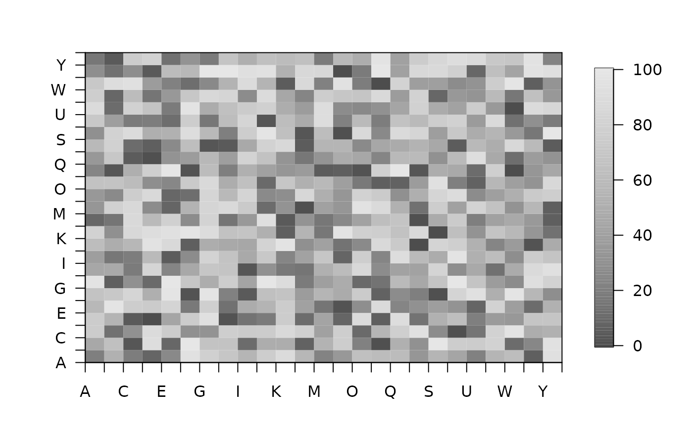
# Colour the diagonal (useful for symmetric square matrices)
pretty_mat(mat, col_diag = "black")
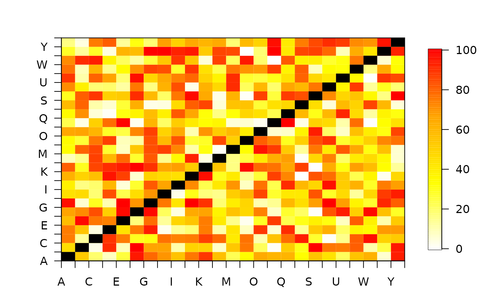
# Add a grid using default options
pretty_mat(mat, grid = list())
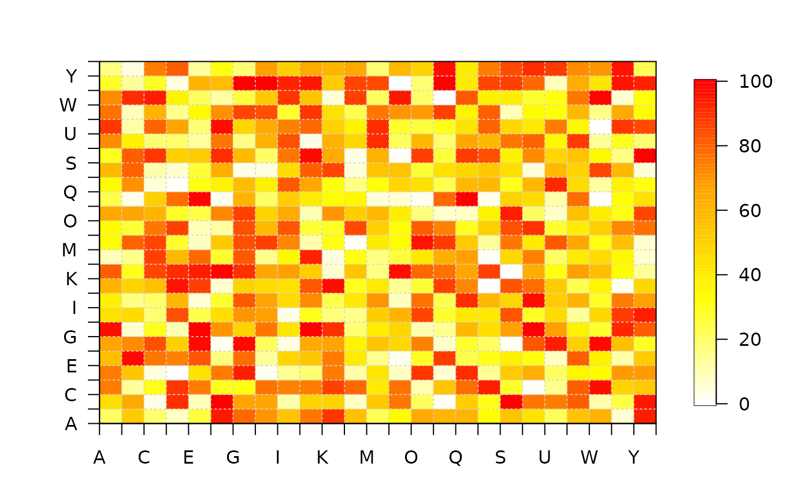
# Customise the grid
pretty_mat(mat, grid = list(col = "black", lty = 1))
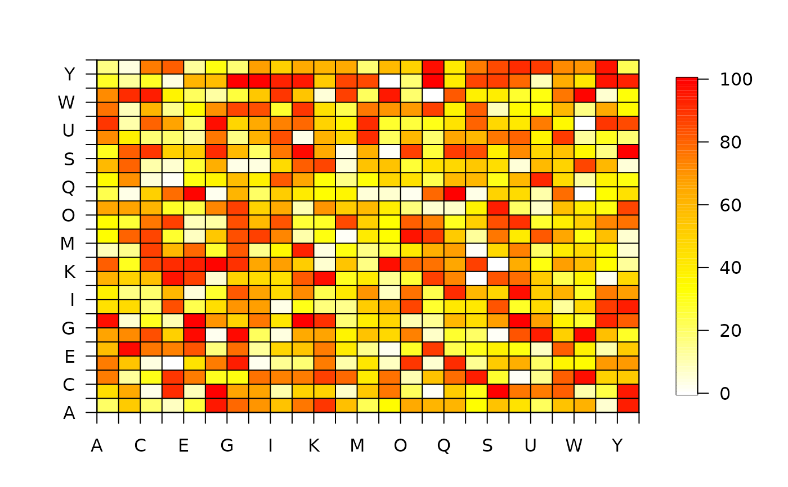
#### Example (3) Rectangular matrices function similarly
# Define matrix
n1 <- 5; n2 <- 10
mat <- matrix(sample(0:100, size = n1*n2, replace = TRUE), ncol = n1, nrow = n2)
utils::str(mat)
#> int [1:10, 1:5] 97 20 78 82 76 96 85 63 61 15 ...
# Visualise matrix with default options
pretty_mat(mat)
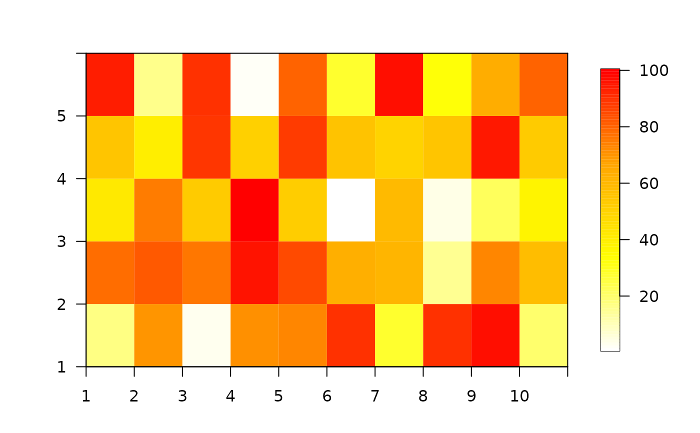
# Adjust names
rownames(mat) <- LETTERS[1:nrow(mat)]
colnames(mat) <- LETTERS[1:ncol(mat)]
pretty_mat(mat)
# Other options can be implemented as above
pretty_mat(mat, grid = list(lty = 1))
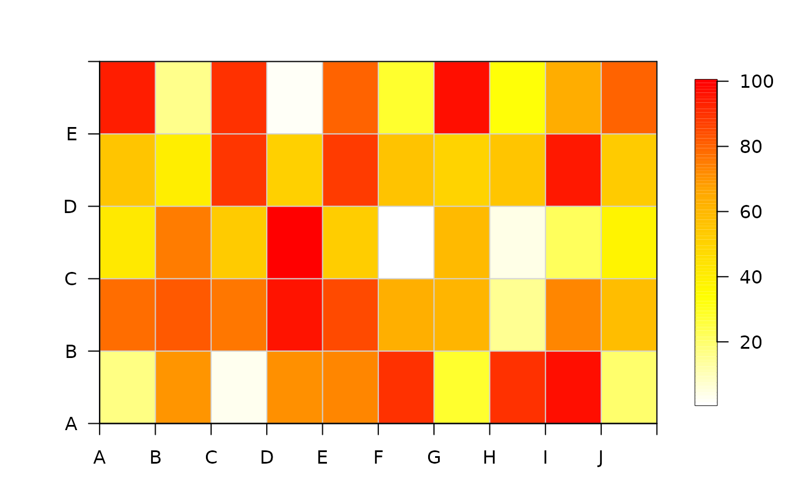
# However, adding colours along the diagonal may not make sense for asymmetric matrices
pretty_mat(mat, col_diag = "grey")
#' #### Example (4): Understanding the retain_orientation argument:
# ... Under the default option (retain_orientation is FALSE), R plots a
# ... 90 degree counter-clockwise rotation of the conventional
# ... printed layout of a matrix. This can be difficult to interpret.
# ... retain_orientation = TRUE ensures the matrix is plotted in the
# ... correct orientation
# Define a simple matrix
n <- 3
mat <- matrix(1:9, ncol = 3, nrow = 3)
# Distinguish row names from column names
rownames(mat) <- LETTERS[1:ncol(mat)]
# Check matrix
mat
#> [,1] [,2] [,3]
#> A 1 4 7
#> B 2 5 8
#> C 3 6 9
# Visualise 'default' versus 'expected' matrix
pp <- par(mfrow = c(1, 2))
pretty_mat(mat, retain_orientation = FALSE, main = "default (rotated)")
pretty_mat(mat, retain_orientation = TRUE, main = "custom (original orientation)")
par(pp)